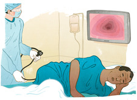

Compare the Choices That Work
Each of these methods has pros and cons. What's right for you depends on how you weigh the tradeoffs in terms of benefits, harms, and cost. Identifying your preference will help you decide with your provider what is the right screening plan for you.
How effective is it?
- Home Stool Test Every year
- Flexible Sigmoidoscopy Every 5 years with a Home Stool Test
- Colonoscopy Every 10 years
All three of these screening methods are effective
No studies have directly compared them, but all three of these methods are considered effective at reducing the likelihood of death from colon cancer. You can improve the quality of care you receive by having procedures performed by experienced providers, properly completing bowel prep, carefully following stool test instructions, and sticking to a screening routine.
What is it like?
- Home Stool Test Every year

At home
- Flexible Sigmoidoscopy Every 5 years with a Home Stool Test
At the doctor's office
- Colonoscopy Every 10 years
- 
In an endoscopy suite or at a hospital
How long does it take?
- Home Stool Test Every year
-
10 minutes
- Short test
- Flexible Sigmoidoscopy Every 5 years with a Home Stool Test
-
1/2—1 day
- Quick prep
- 20-30 min procedure
- No recovery
- Colonoscopy Every 10 years
-
1—2 days
- Night of prep
- 20-40 min procedure
- 1–2 days of recovery
How does it work?
- Home Stool Test Every year
-
Screening
- Looks for invisible blood, which may be a sign of cancer
- Needs follow-up with colonoscopy if anything is found
- Flexible Sigmoidoscopy Every 5 years with a Home Stool Test
-

Screening
- Looks for polyps and signs of early cancer
- Needs follow-up with colonoscopy if anything is found
- Colonoscopy Every 10 years
-
Screening & Treatment
- Finds and removes polyps before they become cancer
How often does it need to be done?
- Home Stool Test Every year
-
Every year
- Follow-up with a colonoscopy if blood is found
- Flexible Sigmoidoscopy Every 5 years with a Home Stool Test
-
Every 5 years
- Follow-up with colonoscopy if polyps or blood are found
- Home stool test is recommended every 3 years
- Screening more than the recommendation unnecessarily exposes you to potential harms
- Colonoscopy Every 10 years
-
Every 10 years
- More frequently if polyps are found or if you have increased risk factors
- Screening more than the recommendation unnecessarily exposes you to potential harms
What are the risks?
- Home Stool Test Every year
No Risk
- There are no possible harms from the test itself
- Flexible Sigmoidoscopy Every 5 years with a Home Stool Test
Smaller Risk
- Risk of excessive bleeding in about 1 of 10,000 sigmoidoscopy procedures
- Colonoscopy Every 10 years
Small Risk
- Risk of excessive bleeding in about 1 of 100 people who have polyps removed
- Risk of bowel tear in about 1 of 1000 people
- Possible reaction to the medication
Does it hurt?
- Home Stool Test Every year
No Discomfort
- No pain or discomfort, although you will be required to collect a few small stool samples
- Flexible Sigmoidoscopy Every 5 years with a Home Stool Test

Not sedated
- Slight pressure or discomfort during the procedure, but should not be painful
- Generally no medication given
- Gas and cramps are common afterwards
- Easy recovery
- Colonoscopy Every 10 years

Sedated
- Medication given during the procedure helps you relax
- Gas and cramps are common afterwards
- Recovery experience and length can vary
What affects the cost?
- Home Stool Test Every year
Free—$10
- The type of kit
- Flexible Sigmoidoscopy Every 5 years with a Home Stool Test

$100—$300
- If polyps are removed and/or biopsied
- Where you have the procedure
- Colonoscopy Every 10 years

$1,500—$3,000
- If polyps are removed and/or biopsied
- What type of anesthesia is used
- Where you have the procedure
How easy is it to arrange?
- Home Stool Test Every year
-
Easy
- Commonly available from healthcare providers
- You may need to ask for the kit
- Flexible Sigmoidoscopy Every 5 years with a Home Stool Test
-
Moderate
- May be hard to find a doctor who performs them regularly
- Requires an appointment
- Colonoscopy Every 10 years
-
Moderate
- Requires a referral to a specialist
- May be hard to find a specialist nearby
- Requires an appointment